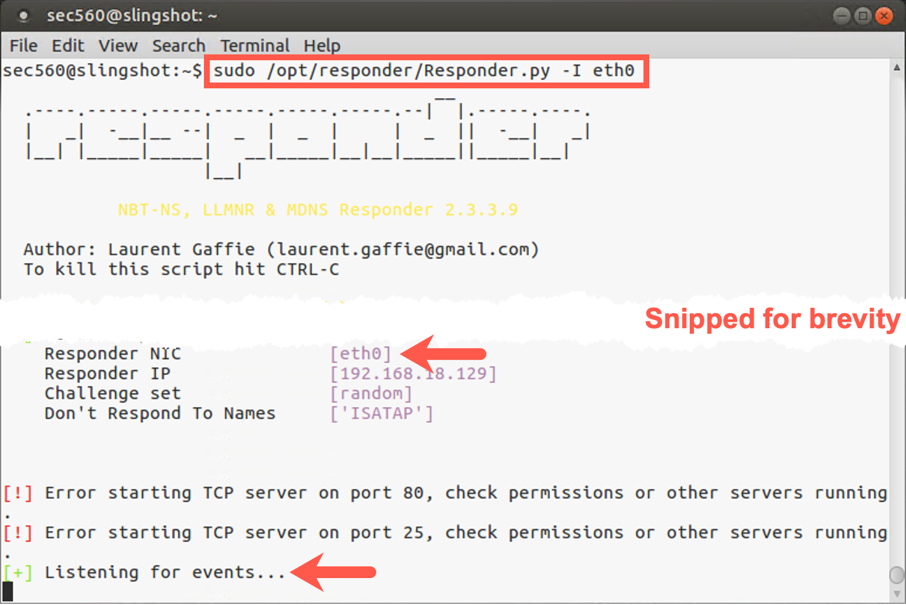

Lab 5.2: Responder
Objectives
- We will obtain an NTLMv2 challenge-response by abusing LLMNR (using Responder)
- We will crack the NTLMv2 challenge-response using John The Ripper, providing us with a valid set of credentials
Lab Setup
You’ll need to have your Slingshot Ubuntu and Windows image booted for this lab. From the Slingshot Ubuntu image, we will use Responder to "attack" the Windows image. From here, our goal is to capture the NTLMv2 Challenge / Response and attempt an offline brute force attack. Since Responder is using Multicasts (and we want to avoid students impacting other students), the VMware network adapters for both your Linux and Windows VM need to be set to HOST-ONLY (as explained on Day 1) before starting with this lab.
Lab – Step-by-Step Instructions
Step 1. Switch to Host-only networking
To switch to host-only networking, on your Host machine, you need to:
Disconnect your Ethernet connection by unplugging your network cable and disabling any wireless activity.
In VMware, make sure you have selected 'Host-only' networking (in VMware, go to VM > Settings, select Network Adapter, and check Host-only).

IP Address Change
Note: The IP addresses of your systems will change! The IP address shown on the desktop will not update immediately. The IP address from the command line will always be correct.
Linux
You will need to renew your IP address by running the following commands:
sec560@slingshot~$ sudo dhclient -r eth0 sec560@slingshot~$ sudo dhclient eth0
Then find your new IP address by running ifconfig.
sec560@slingshot~$ ifconfig
Windows
Your Windows host should detect the network change and get a new IP address automatically. To determine the new IP address, run the following command:
C:\> ipconfig
Write down your new Windows and Linux IP addresses.
To make sure this works properly, verify that you can ping from Windows to Linux and from Linux to Windows. You may need to disable your Windows built-in firewall (from an elevated command prompt running with Administrator privileges):
C:\> netsh advfirewall set allprofiles state off C:\> ping YOUR_LINUX_IP_ADDRESS
YOUR_LINUX_IP_ADDRESSwill likely be something similar to 192.168.X.X.
Then, in Linux, run:
sec560@slingshot~$ ping YOUR_WINDOWS_IP_ADDRESS
YOUR_WINDOWS_IP_ADDRESSwill likely be 192.168.X.X.
If you can successfully ping with host-only networking, you are ready to begin.
Step 2. Launch Responder
Let's open a terminal prompt in Linux. In order to run Responder, we'll need root privileges, so let's use sudo to elevate privileges to root. Responder is located in /opt/responder.
sec560@slingshot:~$ sudo /opt/responder/Responder.py -I eth0
Responder should provide a rather verbose output. You will observe several warnings, which you can safely ignore. It will, for example, indicate it cannot start listening on certain ports, as they are already in use by other services / applications on your Linux machine. You can ignore the errors; we don't need all the modules to be up and running.
After printing the different warnings, Responder should finish by printing "Listening for events...".

Responder is now ready to start responding to NBT-NS (Netbios Nameserver) and LLMNR multicast requests!
Step 3. Switch to Windows machine
Let's now switch to our victim Windows machine.
Log out of your Windows VM and then log in with the credentials below:
- Username:
clark - Password:
Front242
Step 4. Opening Explorer window
The Windows machine (Sec560Student) will likely have an IP address similar to 192.168.X.XXX. Let's open an Explorer window and try opening an SMB connection to a system that does not exist. Remember, this will trigger a LLMNR request, as the Windows machine will try to resolve the hostname using a multicast LLMNR request. It's these types of requests Responder will respond to!
We could try, for example, opening an SMB session to "WINDOWS01"! You can do this by opening an Explorer window and typing \\WINDOWS01 in the address bar and hitting enter; the connection will hang for a few seconds, after which it will return "Access Denied" and request credentials.
It's important to note that, at this point, your Windows machine already attempted to sign on using the credentials of your current Windows session. Responder should thus already have been able to obtain an NTLMv2 challenge-response...
After Windows authenticates a number of times, you will be presented with this dialog. You can simply close it; we already grabbed the hashes!
Step 5. Review NTLMv2 challenge / response hash
Let's switch back to our Slingshot Linux machine so we can observe whether our attempt was successful!
In the window where Responder is running, you should now see that an NTLMv2 challenge-response was captured (see screenshot for an example of what that should look like). If you do not see it immediately, you may need to scroll up in the window. The entry should clearly indicate the hash is for clark and was collected from your Windows machine.
Once you see the hash, you can quit Responder by pressing CTRL+C.
Step 6. Use John The Ripper to crack the obtained hash
It's important to note the difference between an NTLM hash and a NetNTLMv2 hash:
An NTLM hash (or NT hash) is an unsalted MD4 hash of the password that is used by Windows to store passwords in the SAM file (local users) or in the NTDS.dit file (domain users). This type of hash can be used in a Pass-the-Hash attack!
A NetNTLMv2 hash is a challenge-response that can be used to launch an offline brute force attack. This type of hash cannot be used in a Pass-the-Hash attack, but could potentially be relayed in an SMB Relaying attack!
The hashes captured by Responder are by default saved in a .txt file in /opt/responder/logs with a name that resembles the filename below. Your actual filename will thus depend on the IP address of your Windows machine.
SMBv2-NTLMv2-SSP-YOUR_WINDOWS_IP_ADDRESS.txt
Remember, don't type this address; use tab completion! Type the first few characters of the filename or directory, then press Tab.
We need to specify the hash-type to be targeted by John (NetNTLMv2), which we can do by using the "format" flag:
root@slingshot:~$ john --format=netntlmv2 /opt/responder/logs/SMBv2-NTLMv2-SSP-YOUR_WINDOWS_IP_ADDRESS.txt
John will start brute forcing the provided hashes immediately. In our specific scenario, cracking will be extremely fast! This is because John first attempts a number of "guessable" passwords (such as the username). As our clark user account uses “Front242” as a password, we will see the password rather quickly (“Front242” is part of the dictionary we are using).
One important thing to note is that John doesn't "re-crack" hashes. If it has already cracked a certain hash, it will just inform you that it didn't load any hashes when attempting to crack them again.
In order to view already cracked hashes, we can use the John show function:
root@slingshot:~$ john --show /opt/responder/logs/SMBv2-NTLMv2-SSP-10.10.75.101.txt
This command searches inside the john.pot file for the hashes in SMBv2-NTLMv2-SSP-10.10.75.101.txt so that it can print the passwords associated with the users.
Congratulations! You have successfully cracked a NetNTLMv2 challenge-response!
Conclusion
In this lab, you looked at how to perform a network-level attack with Responder to obtain NTLMv2 hashes and how we can use John The Ripper to crack these hashes. This technique is useful for penetration testers to discern passwords and use them for gaining deeper access into target environments.